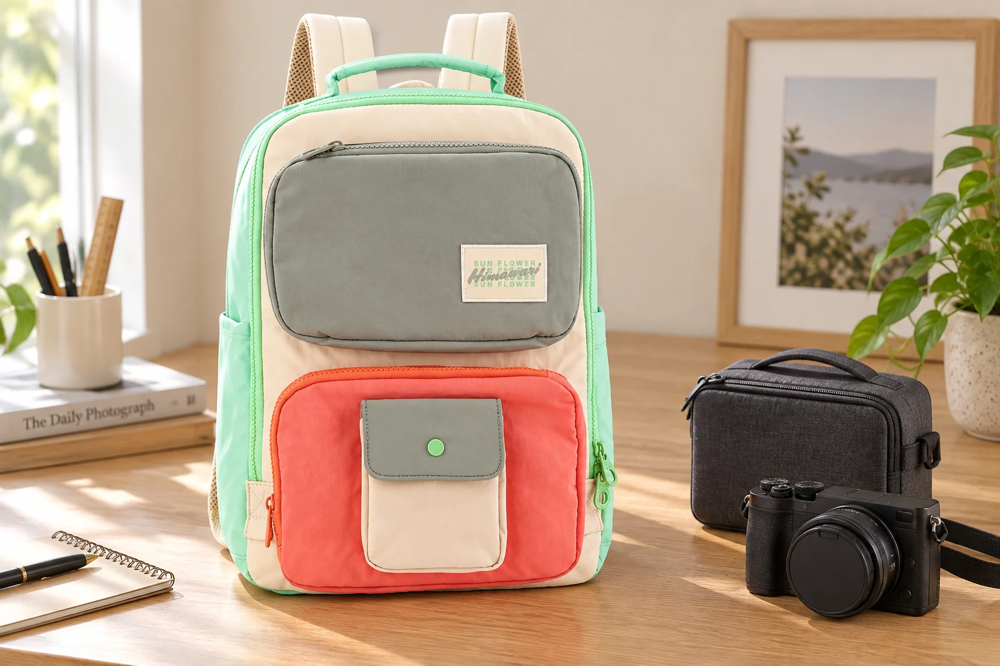

평소 백팩에 카메라를 넣고 싶다면: 가방보다 보호 케이스부터

출근길의 빛이나 주말 골목 풍경을 찍고 싶어 카메라를 챙기는 날이 있습니다. 평소 백팩에 작은 기기 하나만 더하면 될 것 같지만, 앞으로 나온 렌즈와 다이얼은 책이나 옷과 다르게 자리를 차지합니다. 전용 카메라 가방 대신 일상 백팩을 사용하려면 카메라를 맨몸으로 넣었을 때의 빈 공간보다 보호 케이스를 닫은 상태를 먼저 기준으로 삼으세요.
카메라에 무엇을 장착한 채 이동할지 정합니다
렌즈, 후드, 그립, 스트랩을 모두 붙인 모습은 카메라 본체만의 크기와 다릅니다. 평소 이동할 상태로 준비하고 렌즈 캡을 씌운 다음, 그 구성에 맞는 보호 케이스의 안내를 확인하세요. 렌즈를 붙인 채 보관할 수 있는지, 분리 수납을 요구하는지는 기기와 케이스에 따라 다릅니다. 가방에 맞추려고 렌즈나 다이얼을 눌러 넣는 대신, 먼저 안전하게 보관할 조합을 정하고 그 조합을 담을 가방을 고릅니다.
확인할 크기는 닫힌 케이스의 바깥 치수입니다
백팩의 외부 크기가 케이스보다 크다고 해서 반드시 들어가는 것은 아닙니다. 입구의 폭, 안쪽 칸막이와 여밈 위치도 영향을 줍니다. 손잡이나 돌출된 지퍼 손잡이까지 포함한 케이스가 자연스럽게 들어가고, 백팩을 닫을 때 윗부분이 눌리지 않는지 확인하세요. 이미 가방을 가지고 있다면 빈 케이스로 먼저 넣고 빼봅니다. 구매 전 문의할 때는 카메라 이름만 보내기보다 케이스의 가로·세로·폭과 함께 사용할 물건을 알려주면 필요한 확인이 구체적입니다.
빈틈을 채우는 옷과 기기를 보호하는 케이스는 다릅니다
겉옷으로 카메라를 둘러 감으면 잠깐은 흔들림이 줄어 보일 수 있지만, 옷이 풀리거나 지퍼가 기기에 닿을 수 있습니다. 기기에 맞는 보호 케이스를 사용하고, 책 모서리와 열쇠처럼 단단한 물건이 직접 닿지 않게 분리하세요. 케이스 위에 무거운 물건을 억지로 쌓지 않고 물병과도 떨어뜨려 둡니다. 일상 백팩의 노트북 칸이나 생활방수 원단을 카메라의 충격·방수 보호 등급으로 대신 판단하지 않는 것이 중요합니다.
꺼낼 때는 백팩과 케이스를 차례로 엽니다
길을 걸으며 가방을 한쪽 어깨에 건 채 카메라를 꺼내기보다, 멈춰서 안정된 자리에 가방을 놓고 여세요. 백팩 안에서 케이스가 어느 방향으로 열리는지 미리 정해두면 다른 물건을 전부 꺼낼 일이 줄어듭니다. 카메라를 손으로 받친 다음 케이스에서 분리하고 스트랩은 기기 설명에 맞게 사용합니다. 다시 이동하기 전에는 렌즈 캡, 케이스 여밈, 백팩 지퍼를 순서대로 확인하세요. 촬영을 자주 반복한다면 수납량보다 이 동작이 편한지가 선택의 기준이 됩니다.
No.8029 사진은 배치 아이디어로 봐주세요
사진에서는 Himawari No.8029와 카메라 케이스를 나란히 두어 출발 전 준비 장면을 표현했습니다. 케이스를 가방 안에 넣어 검증한 사진은 아니므로, 같은 카메라나 케이스의 수납을 보장하지 않습니다. 제품의 앞 포켓과 배색을 살펴본 뒤 실제 내부 구조와 필요한 치수를 별도로 확인해주세요. 여러 렌즈나 무거운 장비를 함께 가져가야 한다면 장비에 맞는 전용 가방도 함께 검토하세요. 일상용 백팩을 계속 쓸지는 오늘 가져갈 장비와 꺼내는 횟수를 기준으로 결정하면 됩니다.
참고·안내
- Himawari No.8029 제품 정보
- 실제 Himawari No.8029 제품 사진을 참조해 만든 AI 연출 이미지입니다. 카메라와 케이스는 소품이며, 사진은 수납 가능 여부나 충격 보호 성능을 보여주는 시험이 아닙니다.
자주 묻는 질문
패딩 케이스만 넣으면 충격 보호가 보장되나요?
케이스와 가방의 보호 수준은 제품별 안내를 확인해야 합니다. 케이스를 썼다는 이유만으로 낙하나 충격에 안전하다고 단정할 수 없습니다.
작은 카메라를 노트북 포켓에 그대로 넣어도 되나요?
평평한 기기용 포켓이 렌즈가 돌출된 카메라에 맞는다고 볼 수 없습니다. 기기에 적합한 보호 케이스와 실제 내부 구조를 먼저 확인하세요.